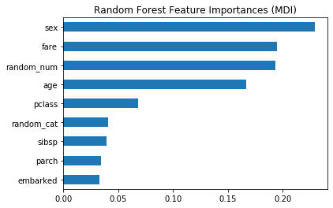
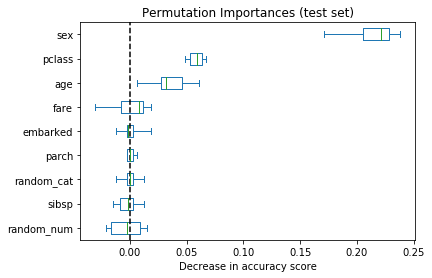
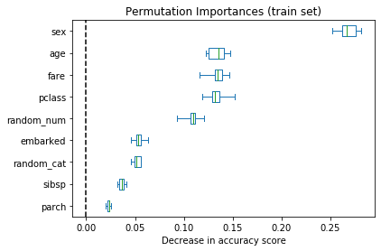
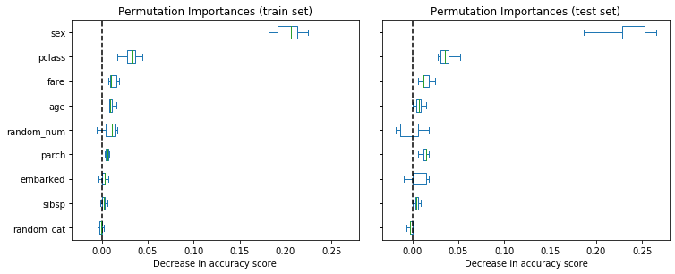

from collections import defaultdict
import matplotlib.pyplot as plt
import numpy as np
import pandas as pd
from scipy.stats import spearmanr
from scipy.cluster import hierarchy
from scipy.spatial.distance import squareform, pdist
from sklearn.datasets import fetch_openml, load_breast_cancer
from sklearn.model_selection import train_test_split
from sklearn.ensemble import RandomForestClassifier
from sklearn.impute import SimpleImputer
from sklearn.compose import ColumnTransformer
from sklearn.pipeline import Pipeline
from sklearn.preprocessing import OrdinalEncoder
from sklearn.inspection import permutation_importance
pd.set_option("display.max_columns", None)
plt.rcParams["figure.facecolor"] = (1, 1, 1, 0) # RGBA tuple with alpha=0
plt.rcParams["axes.facecolor"] = (1, 1, 1, 0) # RGBA tuple with alpha=0Feature Importance
Permutation Importance vs Random Forest Feature Importance (MDI)
In this example, we will compare the impurity-based feature importance of RandomForestClassifier with the permutation importance on the titanic dataset using permutation_importance. We will show that the impurity-based feature importance can inflate the importance of numerical features.
Furthermore, the impurity-based feature importance of random forests suffers from being computed on statistics derived from the training dataset: the importances can be high even for features that are not predictive of the target variable, as long as the model has the capacity to use them to overfit.
This example shows how to use Permutation Importances as an alternative that can mitigate those limitations.
Data Loading and Feature Engineering
Let’s use pandas to load a copy of the titanic dataset. The following shows how to apply separate preprocessing on numerical and categorical features.
We further include two random variables that are not correlated in any way with the target variable (survived):
random_num is a high cardinality numerical variable (as many unique values as records).
random_cat is a low cardinality categorical variable (3 possible values).
X, y = fetch_openml("titanic", version=1, as_frame=True, return_X_y=True, parser="pandas")
rng = np.random.RandomState(seed=42)
X["random_cat"] = rng.randint(3, size=X.shape[0])
X["random_num"] = rng.randn(X.shape[0])
categorical_columns = ["pclass", "sex", "embarked", "random_cat"]
numerical_columns = ["age", "sibsp", "parch", "fare", "random_num"]
X = X[categorical_columns + numerical_columns]
X_train, X_test, y_train, y_test = train_test_split(X, y, stratify=y, random_state=42)We define a predictive model based on a random forest. Therefore, we will make the following preprocessing steps:
- use
OrdinalEncoderto encode the categorical features; - use
SimpleImputerto fill missing values for numerical features using a mean strategy.
categorical_encoder = OrdinalEncoder(handle_unknown="use_encoded_value", unknown_value=-1, encoded_missing_value=-1)
numerical_pipe = SimpleImputer(strategy="mean")
preprocessing = ColumnTransformer(
[
("cat", categorical_encoder, categorical_columns),
("num", numerical_pipe, numerical_columns),
],
verbose_feature_names_out=False,
)
rf = Pipeline(
[
("preprocess", preprocessing),
("classifier", RandomForestClassifier(random_state=42)),
]
)
rf.fit(X_train, y_train)Pipeline(steps=[('preprocess',
ColumnTransformer(transformers=[('cat',
OrdinalEncoder(encoded_missing_value=-1,
handle_unknown='use_encoded_value',
unknown_value=-1),
['pclass', 'sex', 'embarked',
'random_cat']),
('num', SimpleImputer(),
['age', 'sibsp', 'parch',
'fare', 'random_num'])],
verbose_feature_names_out=False)),
('classifier', RandomForestClassifier(random_state=42))])In a Jupyter environment, please rerun this cell to show the HTML representation or trust the notebook. On GitHub, the HTML representation is unable to render, please try loading this page with nbviewer.org.
Pipeline(steps=[('preprocess',
ColumnTransformer(transformers=[('cat',
OrdinalEncoder(encoded_missing_value=-1,
handle_unknown='use_encoded_value',
unknown_value=-1),
['pclass', 'sex', 'embarked',
'random_cat']),
('num', SimpleImputer(),
['age', 'sibsp', 'parch',
'fare', 'random_num'])],
verbose_feature_names_out=False)),
('classifier', RandomForestClassifier(random_state=42))])ColumnTransformer(transformers=[('cat',
OrdinalEncoder(encoded_missing_value=-1,
handle_unknown='use_encoded_value',
unknown_value=-1),
['pclass', 'sex', 'embarked', 'random_cat']),
('num', SimpleImputer(),
['age', 'sibsp', 'parch', 'fare',
'random_num'])],
verbose_feature_names_out=False)['pclass', 'sex', 'embarked', 'random_cat']
OrdinalEncoder(encoded_missing_value=-1, handle_unknown='use_encoded_value',
unknown_value=-1)['age', 'sibsp', 'parch', 'fare', 'random_num']
SimpleImputer()
RandomForestClassifier(random_state=42)
Accuracy of the Model
Prior to inspecting the feature importances, it is important to check that the model predictive performance is high enough. Indeed there would be little interest of inspecting the important features of a non-predictive model.
Here one can observe that the train accuracy is very high (the forest model has enough capacity to completely memorize the training set) but it can still generalize well enough to the test set thanks to the built-in bagging of random forests.
It might be possible to trade some accuracy on the training set for a slightly better accuracy on the test set by limiting the capacity of the trees (for instance by setting min_samples_leaf=5 or min_samples_leaf=10) so as to limit overfitting while not introducing too much underfitting.
However let’s keep our high capacity random forest model for now so as to illustrate some pitfalls with feature importance on variables with many unique values.
print(f"RF train accuracy: {rf.score(X_train, y_train):.3f}")
print(f"RF test accuracy: {rf.score(X_test, y_test):.3f}")RF train accuracy: 1.000
RF test accuracy: 0.814Tree’s Feature Importance from Mean Decrease in Impurity (MDI)
The impurity-based feature importance ranks the numerical features to be the most important features. As a result, the non-predictive random_num variable is ranked as one of the most important features!
This problem stems from two limitations of impurity-based feature importances:
impurity-based importances are biased towards high cardinality features;
impurity-based importances are computed on training set statistics and therefore do not reflect the ability of feature to be useful to make predictions that generalize to the test set (when the model has enough capacity).
The bias towards high cardinality features explains why random_num has a really large importance in comparison with random_cat while we would expect both random features to have a null importance.
The fact that we use training set statistics explains why both the random_num and random_cat features have a non-null importance.
feature_names = rf[:-1].get_feature_names_out()
mdi_importances = pd.Series(rf[-1].feature_importances_, index=feature_names).sort_values(ascending=True)fig, ax = plt.subplots(figsize=(6, 4))
ax.set_title("Random Forest Feature Importances (MDI)")
mdi_importances.plot.barh(ax=ax)
plt.show()
As an alternative, the permutation importances of rf are computed on a held out test set. This shows that the low cardinality categorical features sex and pclass are the most important features. Indeed, permuting the values of these features will lead to most decrease in accuracy score of the model on the test set.
Also note that both random features have very low importances (close to 0) as expected.
result = permutation_importance(rf, X_test, y_test, n_repeats=10, random_state=42, n_jobs=-1)
sorted_importances_idx = result.importances_mean.argsort()
importances = pd.DataFrame(
result.importances[sorted_importances_idx].T,
columns=X.columns[sorted_importances_idx],
)fig, ax = plt.subplots(figsize=(6, 4))
ax.set_title("Permutation Importances (test set)")
importances.plot.box(vert=False, whis=10, ax=ax)
ax.axvline(x=0, color="k", linestyle="--")
ax.set_xlabel("Decrease in accuracy score")
plt.show()
It is also possible to compute the permutation importances on the training set. This reveals that random_num and random_cat get a significantly higher importance ranking than when computed on the test set. The difference between those two plots is a confirmation that the RF model has enough capacity to use those random numerical and categorical features to overfit.
result = permutation_importance(rf, X_train, y_train, n_repeats=10, random_state=42, n_jobs=-1)
sorted_importances_idx = result.importances_mean.argsort()
importances = pd.DataFrame(
result.importances[sorted_importances_idx].T,
columns=X.columns[sorted_importances_idx],
)fig, ax = plt.subplots(figsize=(6, 4))
ax.set_title("Permutation Importances (train set)")
ax = importances.plot.box(vert=False, whis=10, ax=ax)
ax.axvline(x=0, color="k", linestyle="--")
ax.set_xlabel("Decrease in accuracy score")
plt.show()
We can retry the experiment by limiting the capacity of the trees to overfit by setting min_samples_leaf to 20 data points.
rf.set_params(classifier__min_samples_leaf=20).fit(X_train, y_train)Pipeline(steps=[('preprocess',
ColumnTransformer(transformers=[('cat',
OrdinalEncoder(encoded_missing_value=-1,
handle_unknown='use_encoded_value',
unknown_value=-1),
['pclass', 'sex', 'embarked',
'random_cat']),
('num', SimpleImputer(),
['age', 'sibsp', 'parch',
'fare', 'random_num'])],
verbose_feature_names_out=False)),
('classifier',
RandomForestClassifier(min_samples_leaf=20, random_state=42))])In a Jupyter environment, please rerun this cell to show the HTML representation or trust the notebook. On GitHub, the HTML representation is unable to render, please try loading this page with nbviewer.org.
Pipeline(steps=[('preprocess',
ColumnTransformer(transformers=[('cat',
OrdinalEncoder(encoded_missing_value=-1,
handle_unknown='use_encoded_value',
unknown_value=-1),
['pclass', 'sex', 'embarked',
'random_cat']),
('num', SimpleImputer(),
['age', 'sibsp', 'parch',
'fare', 'random_num'])],
verbose_feature_names_out=False)),
('classifier',
RandomForestClassifier(min_samples_leaf=20, random_state=42))])ColumnTransformer(transformers=[('cat',
OrdinalEncoder(encoded_missing_value=-1,
handle_unknown='use_encoded_value',
unknown_value=-1),
['pclass', 'sex', 'embarked', 'random_cat']),
('num', SimpleImputer(),
['age', 'sibsp', 'parch', 'fare',
'random_num'])],
verbose_feature_names_out=False)['pclass', 'sex', 'embarked', 'random_cat']
OrdinalEncoder(encoded_missing_value=-1, handle_unknown='use_encoded_value',
unknown_value=-1)['age', 'sibsp', 'parch', 'fare', 'random_num']
SimpleImputer()
RandomForestClassifier(min_samples_leaf=20, random_state=42)
Observing the accuracy score on the training and testing set, we observe that the two metrics are very similar now. Therefore, our model is not overfitting anymore. We can then check the permutation importances with this new model.
print(f"RF train accuracy: {rf.score(X_train, y_train):.3f}")
print(f"RF test accuracy: {rf.score(X_test, y_test):.3f}")RF train accuracy: 0.810
RF test accuracy: 0.832train_result = permutation_importance(rf, X_train, y_train, n_repeats=10, random_state=42, n_jobs=-1)
test_results = permutation_importance(rf, X_test, y_test, n_repeats=10, random_state=42, n_jobs=-1)
sorted_importances_idx = train_result.importances_mean.argsort()train_importances = pd.DataFrame(
train_result.importances[sorted_importances_idx].T,
columns=X.columns[sorted_importances_idx],
)
test_importances = pd.DataFrame(
test_results.importances[sorted_importances_idx].T,
columns=X.columns[sorted_importances_idx],
)fig, axes = plt.subplots(1, 2, figsize=(10, 4), sharey=True, sharex=True)
fig.tight_layout()
for name, importances, ax in zip(["train", "test"], [train_importances, test_importances], axes.flatten()):
ax = importances.plot.box(vert=False, whis=10, ax=ax)
ax.set_title(f"Permutation Importances ({name} set)")
ax.set_xlabel("Decrease in accuracy score")
ax.axvline(x=0, color="k", linestyle="--")
plt.show()
Now, we can observe that on both sets, the random_num and random_cat features have a lower importance compared to the overfitting random forest. However, the conclusions regarding the importance of the other features are still valid.